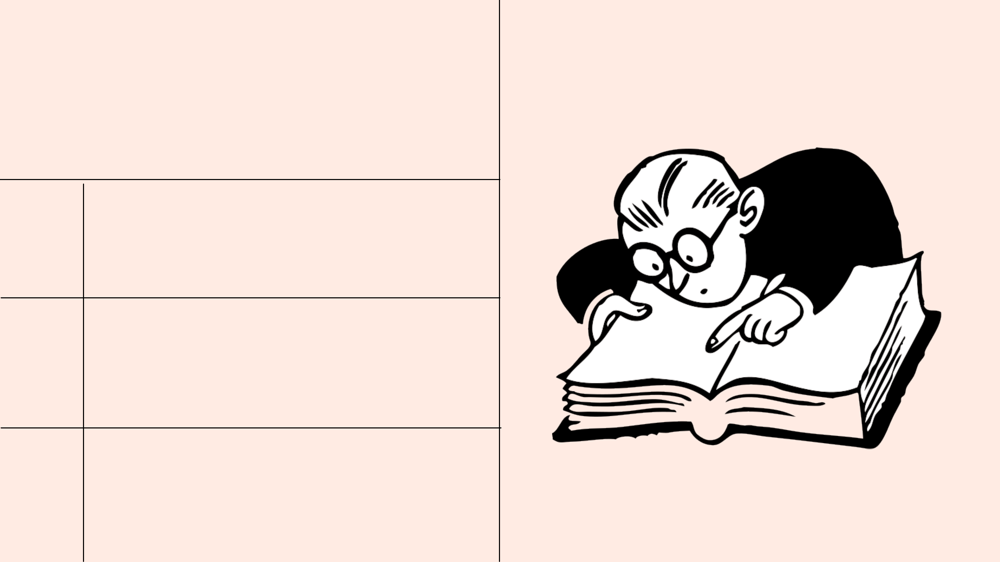

RESEARCH TIPS:
BOOLEAN OPERATORS
Research Fundamentals for Veterinary Technicians
Krystal Sobhie
• What are Boolean Operators?
• Use Boolean Operators to
narrow or broaden your search
• Test your knowledge with a
short quiz!
Overview
articles about bats
https://www.reallygreatlibrary.com
Finding the relevant information you need can be challenging
Struggles that happen while searching
articles about bats
https://www.reallygreatlibrary.com
Homophones, synonyms, and the way we phrase our search string all matter
Struggles that happen while searching
Results 1 - 20 of 2,000,000
articles about bats
https://www.reallygreatlibrary.com
Homophones, synonyms, and the way we phrase our search string all matter
Struggles that happen while searching
Results 1 - 20 of 2,000,000
PART 1:
What are Boolean
Operators?
AND
OR
NOT
Boolean operators are the words "AND", "OR" and "NOT". When
used in library databases (typed between your keywords) they can
make each search more precise - and save you time!
Boolean
Searching
AND
OR NOT

AND
NOT
OR
• will narrow your search
• tell the search engine to include ALL terms
in your results
• example : dogs AND nutrition
BOOLEAN OPERATORS
A set of commands that can be used in
a library search engine.
The three basic boolean operators are
• connect two or more synonyms
• broaden your results by telling the search
engine to show either term in your results
• example : veterinarian OR animal doctor
• exclude a word from your search
• narrow your search by ignoring concepts
that might appear in your search
• example : dog whistles NOT politics
PART 2:
Search
strategies
Use Boolean Operators to
narrow or broaden your
search
AND
We are writing a paper
about the dogs and nutrition,
but we've only searched for
dogs. The results are so
broad and often irrelevant.
Scenario:

When we are searching, sometimes we get too many
results!
Using AND adds a second search term letting you
narrow in on a more specific aspect of your topic.
Here's how using AND works to refine your search
strategy!
Tell a search engine that ALL search terms must be present in the results
AND
Tell a search engine that ALL search terms must be present in the results
AND
https://www.reallygreatlibrary.com
RESULTS
Your search results will include articles about dogs AND nutrition.
Dogs AND Nutrition

https://www.reallygreatlibrary.com
RESULTS
Your search results will include articles about dogs AND nutrition.
Results 1 - 20 of 153,581
Dogs AND Nutrition
https://www.reallygreatlibrary.com
RESULTS
TIP! Using the operator AND will help to narrow your search results!
Results 1 - 20 of 153,581
Dogs AND Nutrition
OR
We are searching for
veterinarians, but we aren't
finding a lot of results. Could
there be another term for
veterinarians?
Scenario:
Some topics have synonyms or variant terms and
spellings! Example: puma or cougar.
If we search for veterinarians OR animal doctors, we
will get more results!
Veterinarian
Tell a search engine that either search term must be present in the results
OR
Animal Doctor
OR
https://www.reallygreatlibrary.com
RESULTS
Your search results will include articles about veterinarians OR animal
doctors, or both.
Veterinarians OR Animal Doctors
https://www.reallygreatlibrary.com
RESULTS
Results 1 - 20 of 30,540
Your search results will include articles about veterinarians OR animal
doctors, or both.
Veterinarians OR Animal Doctors
https://www.reallygreatlibrary.com
RESULTS
Results 1 - 20 of 30,540
TIP! Using OR will help to broaden your search!
Veterinarians OR Animal Doctors
ORAND
TIP! AND and OR work as opposites when used in your
search strategy.
NOT
We want to research the
effectiveness of dog whistles
in the context of pet
training. We keep getting
results about political dog
whistles.
Scenario:
Irrelevant
Irrelevant
Irrelevant

Using NOT tells the search engine to not include
certain terms in your results.
Search terms can have multiple meanings! Example:
Java can refer to coffee or a computer programming
language.
If you are receiving a lot of results that have nothing
to do with your topic, try using NOT to exclude the
second term from appearing.
Tell a search engine to exclude a search term in the results.
NOT
Tell a search engine to exclude a search term in the results.
NOT
Tell a search engine to exclude a search term in the results.
NOT
https://www.reallygreatlibrary.com
RESULTS
Your search results will only include articles about dog whistles NOT politics
Dog whistles NOT politics

https://www.reallygreatlibrary.com
RESULTS
Results 1 - 20 of 546
Your search results will only include articles about dog whistles NOT politics
Dog whistles NOT politics
https://www.reallygreatlibrary.com
RESULTS
Results 1 - 20 of 546
TIP! Using NOT will help to narrow your search!
Dog whistles NOT politics

BOOLEAN OPERATORS
We covered the three basic Boolean
Operator commands that you can use
to improve your search strategy.
Let's see them again!
REVIEW

AND
• will narrow your search
• tell the search engine to include ALL terms
in your results
• example : dogs AND nutrition
BOOLEAN OPERATORS
We covered the three basic Boolean
Operator commands that you can use
to improve your search strategy.
Let's see them again!
REVIEW
AND
OR
• will narrow your search
• tell the search engine to include ALL terms
in your results
• example : dogs AND nutrition
BOOLEAN OPERATORS
We covered the three basic Boolean
Operator commands that you can use
to improve your search strategy.
Let's see them again!
• connect two or more synonyms
• broaden your results by telling the search
engine to show either term in your results
• example : veterinarian OR animal doctor
REVIEW

AND
OR
• will narrow your search
• tell the search engine to include ALL terms
in your results
• example : dogs AND nutrition
BOOLEAN OPERATORS
We covered the three basic Boolean
Operator commands that you can use
to improve your search strategy.
Let's see them again!
• connect two or more synonyms
• broaden your results by telling the search
engine to show either term in your results
• example : veterinarian OR animal doctor
REVIEW
NOT
• exclude a word from your search
• narrow your search by ignoring concepts
that might appear in your search
• example : dog whistles NOT politics
Let's Put Your Knowledge to The Test!
QUIZ TIME
There is only one correct answer for each
question.
MECHANICS SECTION
This game consists of 3 true or false, and 3
multiple choice questions.
If you answer a question incorrectly, you will
be able to try again.
1
2
3
Good luck!
4

QUESTION #1
Boolean Operators do not help to make your search more precise.
TRUE
FALSE
QUESTION #2
The Boolean Operators AND and OR act as opposites of each other.
TRUE
FALSE

QUESTION #3
The Boolean Operators OR and NOT create the same outcome.
TRUE
FALSE
QUESTION #4
What are the three Boolean Operators we covered?
OR
IF
NOT
AND
QUESTION #5
Which Boolean Operator should I use if I’m looking for Cubs and I don’t
want articles about the baseball team, the Chicago Cubs?
OR
NOT
AND

QUESTION #6
Which Boolean Operators will help you to narrow your search results?
OR
NOT
AND
Great Job!
REMEMBER
Boolean Operators can help to narrow OR broaden your search
They can be used in combination with each other
For example: cubs OR bears NOT Chicago
Happy searching!
Slideshow created using Canva
All images provided by Canva
Royalty free music provided by AudioJungle
Sources: